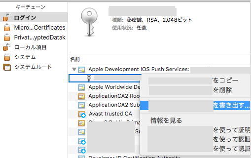

Push Notification (iOS)

フォーマットをp12にする。p12が選択できない場合は、キーチェーンアクセスから該当のものを削除して、ダウンロードしたファイルをフォルダからダブルクリックすると表示される時がある。
p12のパスワードの求められるが「なし」でも問題はない。
書き込みのためのパスワードを入力してp12ファイルが生成される。
サーバー側のpemファイル生成
apns_push_dev.p12を生成してある場合、次のようなコマンドをターミナルから実行する。
openssl pkcs12 -in apns_push_dev.p12 -out apns_push_dev.pem -nodes -clcerts
生成されたapns_push_dev.pemをサーバー側に設置して終わりです。
TOP